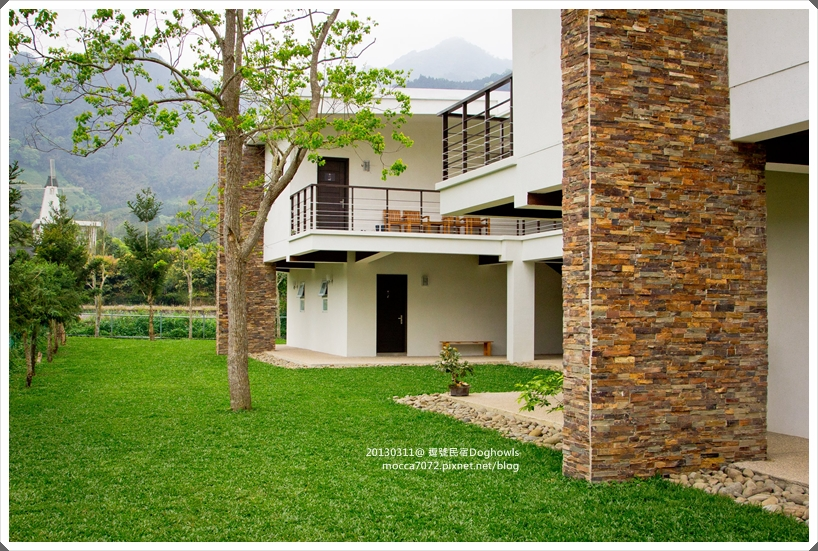

2天1夜的小旅行，只想輕輕鬆鬆，不想跑遠，行程不想太滿
剛好又被這個為寵物打造的民宿給吸引，所以帶卡卡一起來到 南庄 逗號民宿
這天剛好有房客臨時延期，所以當天只有我們一組客人，一聽到“包場“超高興的！！！XD
沒辦法，家裡有夠難搞的小孩，有蛋蛋不行，一直追著他聞的也不行，想騎他的就是找屎！
總之有其它狗狗在，老木我也不用休息了，應該會盯他盯到脫窗吧！？
誠實寫文是一定有的，但也因為包場，所以我這篇分享文好感度會再大增一些些！！（笑）

逗號是今年過年後才剛正式營運沒多久的新民宿
民宿主人Onor麻＆Onor拔一直有在照顧退休的導盲犬
為了讓正在享受退休生活的Ohara有更棒的空間環境
他們親手一點一滴打造了這個超棒的寵物民宿！
看看這一大片腹地，一進來我們一家三口就開始大叫啦！
遠遠就看到白色簡單的建築物，整個環境看起來很清悠舒服
木質的地板，家俱及擺設，簡約的風格
跟海灣32給我的感覺很像，因為才開幕沒多久，房間新的不得了
這次住的是103號兩人房，房內電視冰箱都有
但是只有MOD基本台哦！為什麼要特別提？
因為那晚剛好有WBC日荷對戰，猛哥吃完飯趕回來發現沒得看，失望.....XDDDD
我是比較不care這點啦！我只要網路快又穩就好！！這點逗號很不錯
浴室的熱水夠熱，水壓很穩也夠強
水開到最大，沖在身上還有一丁點痛咧！噗~猛哥也有試可以作證 XD
牆上有個小巧思，這個小尾巴可以懸掛胸背牽繩

每個房間都有獨立的草地
如果狗狗不是那麼愛交朋友，就可以在自己專屬空間丟球奔跑
不然光繞著整圈民宿就一大片公共草地，絕對夠卡卡跑個過癮
而且都有柵欄圍著，不用擔心小狗不見了
往民宿後面走有個小溪可以玩水
怕隔天玩水來不及洗狗退房，所以當天一到就帶卡卡衝今夏第一游啦！go
雖然溪邊玩水透清涼，
但石頭高高低低的，對柯基這種奧咖小狗來說下水不方便，一定要用抱的才行
很久沒下雨，水位不是太高，青苔也很多，拿著單眼在石頭走超怕摔倒的！
卡卡：oh~~阿木！！水好冰啊啊啊啊啊啊啊 （捅你眼）
其實這區沒有很深，這小子賴著石頭邊邊根本是半走半游，嘖.....
只住一晚，媽媽懶的帶一堆東西，所以沒帶救生衣也沒帶玩具
隨手撿了一根小樹枝，丟！！！！卡卡立刻精神抖擻，衝去咬回來給我 XD
天然ㄟ尚好，玩具如果被沖走我還要去救，麻煩死了是不是
咬著小樹枝的小水獺，可愛！！

轉彎！！！沒穿救生衣屁屁也會翹高高了，表示有放鬆在游！！好孩子
卡卡：你不要搶啦！阿爸～～我要拿給瑪麻，還我！！！
哈哈哈～這張好像坐著泡湯的熊熊（？）
原來卡卡真的長得很像熊，之前去卡內奶奶家玩，她都不管名字直接叫卡卡：熊熊（笑噴）
雖然在野溪游泳真的很棒又省錢，但就是有一堆可惡的小黑蚊！！！
很煩！防蚊液也沒用，我又是個人體捕蚊燈........＞“＜ 蚊子好愛吸我血
游了20分鐘，老娘感覺我腳已經有一堆包了，所以跟卡卡說：上來啦！不要游了好不好
沒想到本來趴在石頭邊休息的小子，居然聽到後立刻又下水游
反了反了，平常都是要我拜託他多多下水的，今天故意跟我唱反調就對了！
帶奧咖來抱上抱下是一定要的
卡卡一臉還沒玩夠的不爽臉！！今天讓你陸海空（？）玩夠本啦！！
小狗就是愛草地，一落地high翻天！快門隨便按，都可以拍到短腿小飛彈
大家都問我怎麼樣才能拍到高飛狗，我只能說：買一台好一點的相機吧！XD
其實沒有刻意，就是讓他自然的跑向攝影師，速度不用快，快門夠快就好！
不然就像毛太太一樣用神機造假（？），毛武尬也會飛，那五摳寧啦！！
那絕對是合成的！！！XDDDDDD
幼幼臉！！！
卡內麻每次都會捏著他臉說怎麼都已經是大叔了還是一副幼幼臉，可惡！！哈哈哈
紅內褲專業show dog (?)
柯基的標準logo，我兒子體形很標準吧！！
唯一沒有幸福肥的就只有卡卡了
身材完美兒子v.s 失控走山的爸爸 XDDDDDDDDDDDD
問：卡卡怎麼那麼好拍？
有小鳥兩個字萬事ok，誰講都可以，你說，能拍不好嗎？哈哈
把拔在警告他，看到蝴蝶只能追不能咬，知道嗎？
卡卡：哇災
水陸都玩夠了，O麻這裡還有提供寵物沐浴SPA區
一共有四間，設備完善該有的都有，我最喜歡在戶外洗狗了！哈
防水圍裙長我穿長到都拖地了，醬我也不用再捲褲管，很好！XD
舖上止滑的瑜珈墊，拿出自備的洗毛精，開工
這小子一聽到洗澡澡就是這副屎樣子.....
洗澡時大概就是他唯一不會笑的時候吧！
蓮蓬頭有兩段式
水柱狀的強度比較弱一點，另一種花灑（？）式的沖起來比較感覺有沖乾淨泡泡
哦哦哦哦～～舒服！！！
幫這傢伙洗了5年的澡也算出師了（？）擠肛門線、剃毛、清耳朵、剪指甲都沒問題啦！
螺璇丸！！！！！
哈哈哈哈，反射動作，一關掉水媽媽立刻跑很遠......（猛哥：喂！去那呀你？）
吹水機，跟家裡那台一樣（跟O麻聊天才知道，原來這台非常耗電.....＝ ＝）
之後O麻有考慮使用者付費，可能投幣方式也不一定，但我們這次還是免費的嘍！
旁邊這區是早餐＆廚房，辦公室也在這裡
自已洗的就是不一樣，毛好白好澎鬆的有沒有 ＞／／／／／／＜
我只能說包場真的太棒了！！！
（O麻，度不起，我當然也希望你生意興隆，沒有空房啦！XD)
跟自已家一樣，進進出出，不用大聲的呼喚卡卡，不用擔心他亂跑
Oh~二樓的拉拉就是民宿的小主人 Ohara爺爺，今年已經16歲嘍！
他是已經退休的導盲犬，這裡有他的介紹－＞台灣第二隻導盲犬Ohara
很巧的是！0311我們結婚紀念日這天也是他來當O麻家孩子滿兩年的日子
帶卡卡上二樓跟歐哈啦打個招呼
瞧瞧Ohara的臉，好帥啊！！怎麼看都不像是爺爺級的人物呀！
麻：卡卡來，跟爺爺打個招呼吧！
卡卡：！！！！！
我跟O麻快要被這小子笑屎！！一直在歐拉拉旁邊繞圈圈，不肯多靠近一步
叫他坐下來給麻麻拍照，居然給我保持這麼一大段的距離.....XDDDD
還面無表情直視前方，裝淡定的臉，真的太太太太太好笑了！！！
臭卡卡，你搞清楚，人家爺爺可是訓練有素的專業導盲犬咧！
你以為人家跟你一樣小氣巴拉愛幹架啊！
哈！Ohara這張好慈祥
所以，只好來張借位合照啦！！兩個孩子都笑嘻嘻，真可愛！！！
我們又跑到三樓看風景
南庄這一帶有將近一百多間民宿，因為離台北近，從來也沒想過會來這裡待到一晚
草地上的是來探望Ohara的朋友，卡卡看人家玩看的很入迷
換我們下樓跑跑
O麻拿了個小企鵝借卡卡玩，坐在草地上，吸著新鮮空氣，看著卡卡開心的笑容
安排這個小旅行真的很值得！
這幾年出去玩，找民宿都不是找“人類“去的 （笑）
朋友推薦設備再好的地方，只要卡卡不能去，對我們而言，一點意義也沒有
（我相信有養狗的朋友都懂）
有大草地、友善寵物這兩點就夠吸引我們入住了
雖然逗號是寵物民宿，但其實沒有養狗狗的朋友也很適合
重點是不管是寵物或人，最基本的入住規範要遵守並自律
不讓狗上床、不在房間便溺、這些都是很基本的道德
民宿規定都算合理，如果不想照做就不要住，總是會有人自以為花錢就是大爺
拜託！不要再有老鼠屎害我們守規矩的飼主一起揹黑鍋了
＝＝＝＝＝＝＝＝＝＝＝＝＝＝＝＝
逗號民宿Doghowls
FB粉絲團 Facebook
地址：苗栗縣南庄鄉南江村17鄰福南58號
電話：0975 820 058